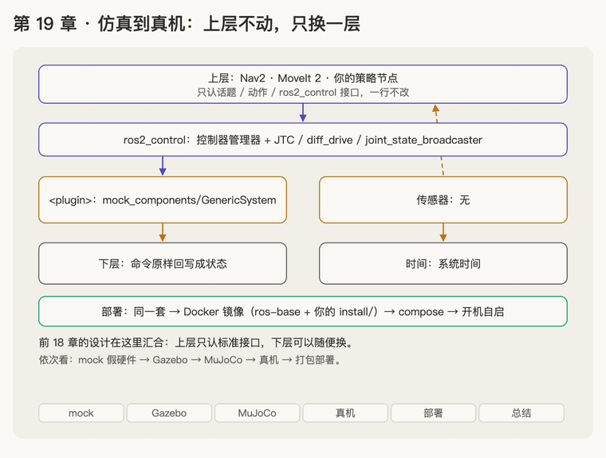

第 19 章 · 仿真与部署
本章回答：同一套导航 / 机械臂代码，怎么先在仿真里跑通、再一键切到真机？Gazebo、MuJoCo、Isaac Sim 各接在 ROS 2 的哪一层？写好的系统怎么打包、装到机器人上、开机自启？Wi-Fi 下传大消息为什么会"卡死 30 秒"？
讲解日期：2026-11-13 · 上一章：第 18 章 MoveIt 2 · 下一章：第 20 章 收尾：把学习策略部署成 ROS 2 节点
对应原文：ecosystem/control.ros.org/doc/simulators/simulators.rst；ros2_documentation/source/Developer-Tools/Build/Deployment-Guidelines/Deployment-Guidelines.rst；ros2_documentation/source/Developer-Tools/Build/DDS-tuning.rstL44–L85（路径相对ros2/materials/）
对应 study-plan 阶段 I1、I2。接机器人软硬件架构专题第 9 章（仿真、数据、部署）。
本章缩写：SDF = Simulation Description Format（仿真 / 描述 / 格式：Gazebo 的世界与模型格式）；gz = Gazebo（新版 Gazebo 的命令名）；MJCF = MuJoCo XML Format；OTA = Over-The-Air（空中 / 远程升级）；IP = Internet Protocol；SROS2 = Secure ROS 2（安全 ROS 2 工具集）；GPU = Graphics Processing Unit；MTU = Maximum Transmission Unit（最大 / 传输 / 单元：一个网络包最多多大，常见 1500 字节）。全部缩写见 附录 · 缩写与术语表
本章先看总图，再分 3 步：
| 步 | 内容 | 状态 |
|---|---|---|
| 0 | 总图：同一套上层，换一层硬件插件，仿真 ↔ 真机 | ✅ |
| 1 | 仿真器怎么接：Gazebo、MuJoCo、Isaac Sim、Webots，和仿真时间 | ✅ |
| 2 | 部署：Docker 镜像、开机自启、交叉编译 | ✅ |
| 3 | 现场网络与安全：DDS 调优、Wi-Fi 大消息、SROS2 | ✅ |
讲解
总图 · 仿真到真机只换一层

可交互版：animations/19-sim-to-real.html（内置浏览器：http://localhost:8340/19-sim-to-real.html）。
前 18 章的设计在这里汇合：上层（Nav2、MoveIt、你的策略）只认话题、动作和 ros2_control 的接口；下层换成假硬件、仿真器插件还是真驱动，上层一行不改。 唯一要变的通常是三样东西：URDF 里 <ros2_control> 的 <plugin>、use_sim_time、传感器的数据来源。
类比：飞行模拟器。 驾驶舱（上层）一模一样，窗外和操纵杆背后接的是模拟器还是真飞机，飞行员不用重新学。
第 1 步 · 仿真器怎么接
ros2_control 认可的仿真集成（materials/ecosystem/control.ros.org/doc/simulators/simulators.rst）：
| 仿真器 | 接入方式 | 特点 |
|---|---|---|
| Gazebo（新版，原 Ignition） | gz_ros2_control 硬件插件 + ros_gz_bridge 桥接话题 |
ROS 官方配套；传感器种类全；用 SDF 描述世界 |
| MuJoCo | mujoco_ros2_control 插件 |
接触和动力学精确、快；学习型控制（RL、模仿学习）首选之一 |
| topic-based | 通用"话题硬件接口" | 任意仿真器只要按约定收发关节话题就能接 |
| Isaac Sim、Webots、AGX Dynamics、FZI 的 MuJoCo 方案 | 社区集成 | Isaac Sim 有 GPU 加速渲染和大规模并行，适合合成数据 |
Gazebo 版本：ROS 和 Gazebo 的版本有固定搭配，每个 ROS 发行版的默认 Gazebo 版本由 REP 2000 规定；gz sim 能启动就说明装好了（Integrations-and-related/Simulators/Gazebo/Gazebo.rst）。这里说的是新版 Gazebo，不是已停止维护的 Gazebo Classic。
仿真里的数据流：
- 关节：仿真器插件实现第 16 章的硬件组件接口：
read()从物理引擎读关节状态，write()把命令施加到物理引擎。所以 JTC、diff_drive_controller 原样可用。 - 传感器：相机、激光、IMU 由仿真器生成，经桥接（如
ros_gz_bridge）发成标准 ROS 话题（sensor_msgs/Image、LaserScan……）。 - 时间：仿真器往
/clock发仿真时间，所有节点设use_sim_time:=true（第 11 章）。漏一个，tf 就报"在未来 / 过去"。
还有两个轻量选择（本地文档都有）：Webots（Integrations-and-related/Simulators/Webots/，跨平台，macOS 上也有安装说明）和 MVSim（.../MVSim/，轻量的 2D / 2.5D 移动机器人仿真）。在 Mac 虚拟机里跑 Gazebo 帧率低时（study-plan 已提示），可以先用它们或 turtlesim 级别的 demo 过流程。
和学习型方法的关系：RL / VLA 训练通常在 MuJoCo、Isaac Lab 这类可大规模并行的仿真器里直接跑，不经过 ROS；训练好的策略再通过 ROS 2 节点接到"仿真版 ros2_control"上验证，最后换真机插件（第 20 章）。这一步叫sim-to-real，中间差的物理参数、传感器噪声、延迟，正是第 20 章要测的东西。
第 2 步 · 部署
依据：Developer-Tools/Build/Deployment-Guidelines/Deployment-Guidelines.rst（下称"部署指南"）、.../Run-2-nodes-in-single-or-separate-docker-containers.rst、.../Cross-compilation.rst。
Docker 是最常见的交付方式（部署指南："典型的部署是把容器化应用或软件包发到远程系统"）：
FROM ros:lyrical-ros-base # 官方镜像，只含核心库（不含 GUI）
COPY src/ /ws/src/
RUN . /opt/ros/lyrical/setup.sh && cd /ws && \
apt-get update && rosdep install -i --from-path src -y && \
colcon build --cmake-args -DCMAKE_BUILD_TYPE=Release
CMD ["bash", "-c", ". /ws/install/setup.bash && ros2 launch my_robot robot.launch.py"]
- 基础镜像选最小够用的（
ros-core<ros-base<desktop），机器人上通常不需要 RViz。 - 多阶段构建：编译阶段装编译器和开发包，运行阶段只拷
install/，镜像小很多。 - 用
docker compose描述多个服务（驱动、感知、导航各一个容器），容器之间默认能用 DDS 通信；需要时用network_mode: host（第 8 章：组播在 Docker 默认网络里常常不通）。部署指南的例子用 compose 起了三个容器并共享密钥目录。 - 开机自启：systemd 服务或 compose 的
restart: always；更新：拉新镜像（OTA）。
不用 Docker 时：在目标机上 colcon build，或打成 deb 包（Developer-Tools/Build/Building-a-Custom-Deb-Package.rst）用 apt 安装。
交叉编译（Cross-compilation.rst）：在 x86 电脑上编出给 ARM 机器人（Jetson、树莓派）用的程序，省掉在小板子上慢慢编。用 Docker 的多架构构建（buildx）是常见做法。
第 3 步 · 现场网络与安全
DDS 调优（Developer-Tools/Build/DDS-tuning.rst）：
- 问题：Wi-Fi 下发大消息（图像、点云），一个 UDP 包被拆成很多 IP 分片；丢了任何一片，其余分片就堆在内核缓冲区里，Linux 默认要等 30 秒才放弃重组；缓冲区（默认 256 KB）满了，新分片进不来，连接看起来就"卡死"了。
- 办法：对这类数据用 Best effort QoS（第 7 章）；调小
net.ipv4.ipfrag_time；调大net.ipv4.ipfrag_high_thresh和接收缓冲区；或者压缩图像（image_transport的压缩话题）、降低分辨率帧率。 - 跨网段、跨 Wi-Fi 的远程监控，用 Zenoh 或发现服务器更稳（第 8 章）。
安全（SROS2）（Developer-Tools/Launch/Security/、design/articles/180_ros2_dds_security.md）：DDS 支持认证、加密和访问控制。SROS2 工具生成密钥库（keystore），给每个节点签发证书、规定它能发布 / 订阅哪些话题。默认关闭；机器人联网、多人共用网络或产品化时要打开。部署指南的 Docker 例子演示的就是带安全配置的 talker / listener。
上线前检查清单：
- 所有节点
use_sim_time已关（真机）； - 域号、中间件、发现范围设对（第 8 章）；
- 关键节点退出就整体停机（第 14 章事件）；
- 驱动有超时停车（第 7 章 Deadline / 第 16 章硬件组件）；
- 日志落盘位置和大小有上限；黑匣子 bag 循环录制（第 3 章，Lyrical 的
--max-bag-files）； - 急停是硬件回路，不依赖 ROS（机器人软硬件架构专题第 10 章）。
练习与作答记录
练习 19-1（第 1 步）：你在 Gazebo 里调好了 JTC 和 MoveIt，要换到真机。最少需要改哪些地方？
- 作答：（待作答）
练习 19-2（第 1 步）：仿真里 RViz 一直报 tf "extrapolation into the future"。最可能的原因？
- 作答：（待作答）
练习 19-3（第 2 步）：为什么机器人上的 Docker 镜像通常基于 ros-base 而不是 desktop？多阶段构建省掉了什么？
- 作答：（待作答）
练习 19-4（第 3 步）：机器人在 Wi-Fi 下传 1080p 原始图像，偶尔整条连接停住半分钟。用本章的知识解释原因，并给出两种缓解办法。
- 作答：（待作答）
口诀
- 仿真到真机：上层不动，换
<plugin>、关use_sim_time、换传感器来源。 - 仿真器：Gazebo 官方配套，MuJoCo 动力学准，Isaac 能并行；都通过 ros2_control 插件 + 话题桥接入。
- 部署：Docker 打包、最小镜像、多阶段构建、compose 编排、开机自启。
- 现场网络：大消息 + Wi-Fi = 分片丢失卡 30 秒；Best effort、调内核参数、压缩图像。
- 安全：SROS2 认证加密访问控制，联网产品要开；急停不靠 ROS。
本章复习卡片编号
R44–R45，见 ../review.md。
附录 · 延伸阅读
留给以后深入学习用，不影响本章主线。★ 是建议先读的。
materials/指ros2/materials/；不带前缀的路径在materials/ros2_documentation/source/下（design/、ecosystem/开头的在materials/下）；...表示省略了和上一条相同的目录。
推荐阅读
| 读什么 | 读哪里 | 读它为了什么 |
|---|---|---|
★ simulators.rst |
materials/ecosystem/control.ros.org/doc/simulators/simulators.rst |
ros2_control 的仿真集成列表。 |
★ Simulators |
materials/ros2_documentation/source/Integrations-and-related/Simulators/ |
Gazebo/、Webots/、MVSim/、Simulation-Main.rst。 |
About-Simulation.rst |
Capabilities/About-Simulation.rst |
仿真在 ROS 生态里的位置。 |
★ Deployment-Guidelines |
Developer-Tools/Build/Deployment-Guidelines/、Run-2-nodes-in-single-or-separate-docker-containers.rst、Setup-ROS-2-with-VSCode-and-Docker-Container.rst、Cross-compilation.rst、About-Cross-Compilation.rst、Building-a-Custom-Deb-Package.rst。 |
— |
★ DDS-tuning.rst |
Developer-Tools/Build/DDS-tuning.rst |
Wi-Fi 大消息、分片、内核参数。 |
Security |
Developer-Tools/Launch/Security/（Introducing-ros2-security.rst、Access-Controls.rst、Security-on-Two.rst）；materials/design/articles/180–183 |
DDS 安全、访问控制策略、安全飞地、威胁模型。 |
Nvidia-ROS2-Projects.rst |
Integrations-and-related/Related-Projects/Nvidia-ROS2-Projects.rst、Visualizing-ROS-2-Data-With-Foxglove.rst |
GPU 加速包与远程可视化。 |
| 本仓库 | robot-system-architecture 第 9 章（仿真、数据、部署）、第 10 章（安全）。 | — |
数学原理
- 独立事件都发生：每片以 \(1-p\) 的概率到达、互不影响，\(n\) 片都到的概率是 \((1-p)^n\)。
公式清单
| 公式 / 规则 |
|---|
| 整包丢失概率 \(=1-(1-p)^n\) |
| 64 KB 的 UDP 包 ≈ 45 片（每片约 1480 字节） |
代码对照：把本章的数字用代码算一遍
纯 Python 模拟，不需要 ROS 2（原因见第 1 章这一节）。代码在仓库本地
ros2/solutions/chapter-code/ch19_fragments.py，配套测试tests/test_ch16_20.py；同名 notebook 在notebooks/ch19_fragments.ipynb（讲解和代码放在一起，一格一格跑）。Mac 上直接能跑：
bash cd ros2/solutions/chapter-code uv run python ch19_fragments.py # 一步一步打印 uv run pytest tests/test_ch16_20.py
讲义 ↔ 代码：
| 讲义 | 规则 / 数字 | 写法 | 跑出来 |
|---|---|---|---|
| 第 3 步 分片 | 大消息拆成很多 IP 分片 | fragments_per_datagram() |
每个 64 KB 的 UDP 包 45 片 |
| 同上 | 一张 1080p 原始图 | ceil(6,220,800 / 65,507) |
95 个 UDP 包，约 4275 片 |
| 第 3 步 丢一片全包作废 | \(1-(1-p)^n\) | datagram_loss(0.01, 45) |
约 36% |
| 第 3 步 缓冲区占满 | 256 KB、等 30 秒 | incomplete_datagrams_to_fill_buffer() |
约 4 个残缺包就占满 |
关键几行：
math.ceil(size / 1480) # MTU 1500 减 20 字节 IP 头，每片约 1480 字节
1 - (1 - p) ** n # 每片都到才拼得回来
262_144 / 65_507 # 256 KB 缓冲区装得下几个残缺的大包
代码里才看得到的 3 件事：
- 30 秒和 256 KB 来自 DDS-tuning.rst L47–L48；64 KB 的 UDP 上限、1500 字节 MTU 是常见网络默认值，不是 ROS 文档里的数；1% 的丢包率是编的。
- \((1-p)^n\) 是"n 片都到"的概率：每片独立地以 1−p 的概率到达，n 片都到才算这个包到了。1% 看起来很小，乘 45 次就剩 64%。
- DDS 自己也会切片：很多 DDS 实现会把大消息先切成小于 64 KB 的块再交给 UDP，具体大小看中间件配置。
自己改一改（不影响练习答案）：
- 把丢包率改成 0.1%，看整包丢失的概率；
- 把消息换成压缩后的 200 KB 图像，算要几个 UDP 包、几片。